Problem Definition
Part 1: The first part of this assignment was to implement a basic template matching system and have it track an object of our choice using live feed from a web camera video stream.
It is useful in the real world to allow camera's to find and track human faces as well as let vision systems find points of interest and keep track of their whereabouts in real time.
We decided to use it to track a Charlie Card.
Part 2: The second part of the assignment was to develop a system to detect hand shapes or gestures and come up with a graphical display.
This could be useful for detecting human hand gestures in a work environment or tracking the movements of patients at a hospital. What we decided to do was make a
music player that could play a genre of music based on hand gesture.
Assumptions: At first we assumed that we could not use the opencv matchTemplate functions, however we very soon experienced extremely poor performance issues.
We then switched our assumption to using opencv's functions.
Method and Implementation
Part 1
Tried to implement the template matching on our own.
At first we tried to implement template matching on our own. For test purposes we first worked a single frame before trying to move to a video stream. For the template we used the back of a Windows smart phone. (Please see the picture below, we ended up using it again for the second experiment.) We then resized the image and then created a bounding box which slided through the picture and calculated the Sum Squared Difference of each instance of the bounding box, to the template. After all Sum Squared Differences had been collected we took the bounding box with the smallest Sum Squared Difference to be the location of our object. We then took the box's location scaled up and drew a rectangle around it. At first we didn't experience much success, so we then also tried the normalized coefficient function as well. After thinking to turn the input image into grayscale before running our algorithm, we experienced some success. It seemed that using grayscale and normalizing intensity was giving us better output. Although our algorithm would also pick specific spots on the ceiling and wall (the brightest part's of the frame) and miss the phone completely. Looking back in hindsight using the charlie card as template as we ended up doing later might have seen some better results.
However, the performance of our algorithm was horribly slow. When applied to a live video stream it would take forever to run. We tried different resizing and code variations to speed up the computations but none of them really worked. After tracking down the source code for the opencv matchTemplate function we realized that to do this would actually involve a significant amount of programming dedicated to pure optimization. This is when we decided to go with the opencv function matchTemplate and continue from there.
| Template | Original Image | Result Type: Success | Result Type 2: Failure |
| 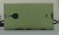 | 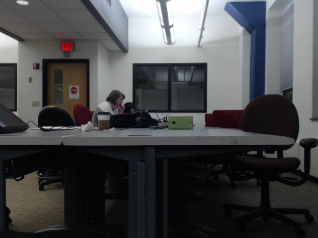 | 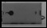 |
Use the opencv Template Matching: Phone and Charlie Card
We then switched to using the opencv function matchTemplate. We still scaled down the frame of the video feed by 1/2. In terms of speed this method was significantly more computationally more feasible and we were able to get it to work on live video stream. (although there was still a lag from the computation) Different norms were experimented for the method parameter and we found that CV_TM_CCORR_NORMED (Nomralized Cross Correlation) gave the best results. This because in normalizing the cross correlation takes into account different brightness and exposure conditions of the images. This is done by centering the data around the mean and standard deviation. However, we were still suffring from a lack of accuracy. We then realized that the color of the phone might have been to similar to objects such as tables, ceilings, so we then decided to switch to using something more distinct. We decided to switch to using a Charlie Card.
With the Chralie Card, we found a much higher degree of success. Although we had move it around to get the scaling correct (we fixed this later) it would find the Charlie Card with a great amount of accuracy.
 | 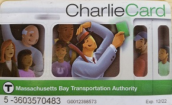 |
| Figure: The two different templates experimented with when implementing our algorithm using opencv |
Get Rotation and Scaling
After getting the template matching to work on the live video stream using the Charlie Card as a template, we went on to work on increasing the capabilites of the template matching algorithm. We decided to try and detect rotation of the template every 90 degrees. Using the opencv function's for rotating and flipping images, we then had four different templates. We then ran the matchTemplate function of the frame against all four templates and kept track of the largest normalized coefficient for each. We then found rotation had the highest normalized coefficient and set that to be the orientation of the object. This method worked considerably well. However running through each template was taking up a lot of computation power, so we decided to not do any more angles.
For scaling since we were experiencing such performance issues we decided to hot key in scaling to the live video feed as opposed to putting it into our algorithm internally. For scaling we decided to scale by a factor of 2. The key 'u' would scale up by 2 and the key 'h' would scale down by 2. This also worked well, often when the bounding box was too big it couldn't find the object. However, scaling down would often solve this problem.
Part 2
Introduction
For this part we decided to do hand shape recognition. Before trying any algorithm specifically we realized that we first needed to take the frame and apply skin detection on it. For this we decided to use the code from lab. The code took the different RGB values and used that to determine which ones were skin. After that we decided that the largest contour would be the contour of the hand. For this we used the findContours function from opencv to get the contours and the contourArea function to get the area of all contours. After that we went through all the contour area's to find the larget one. This worked and we could display the largest contour which was almost always just the hand. After that we tried 2 different methods to recognize hand shapes: One that compared Hausdorff distances of the frame to a template and one that just took the ratio's of bounding box of the frame. The Hausdorff suffered from not enough variation in distances to be able to come up with a meaningful algorithm for classification. The other one however was more efficitive.
An Attempt 1: to do Hand shape detection using Hausdorff Distance or some other metric measures on the hand's contours
In this attempt we had tried to do some variation of template matching with contours based on Hausdorff distance. We first took our template, got the largest contour, drew it to an image and had it resized to be the same size as the bounding box of the largest contour found in out frame. We then shifted the bounding box to the top left corner of the frame, so that the contour was at the top left distance. This made it so that the contours of the template and frame were on essentially on top of each other. We then iterated throught the contours twice to calculate the Hausdorff distance using the L1 norm to define the distance between any two points. The goal was to have different hand shape postures give significantly different distances, however in practice it did not seem to vary much. meaningful output. We also tried different types of averaging distances still with little success. Therefore we decided to scrap this method and try to use one that relied on the ratio of the hieght and width of the bounding box.
| Template | Sample Hand Shape | Sample Hand Shape | Sample Hand Shape |
| 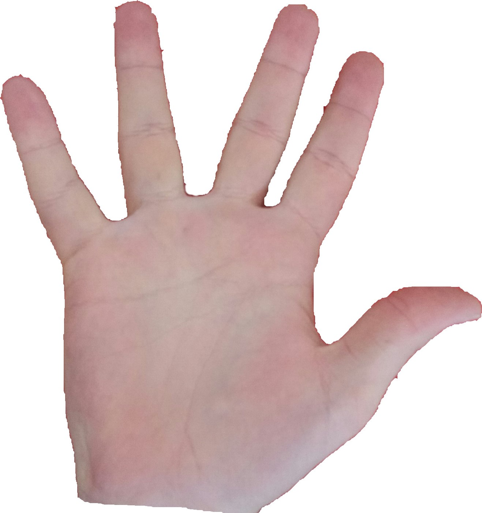 | 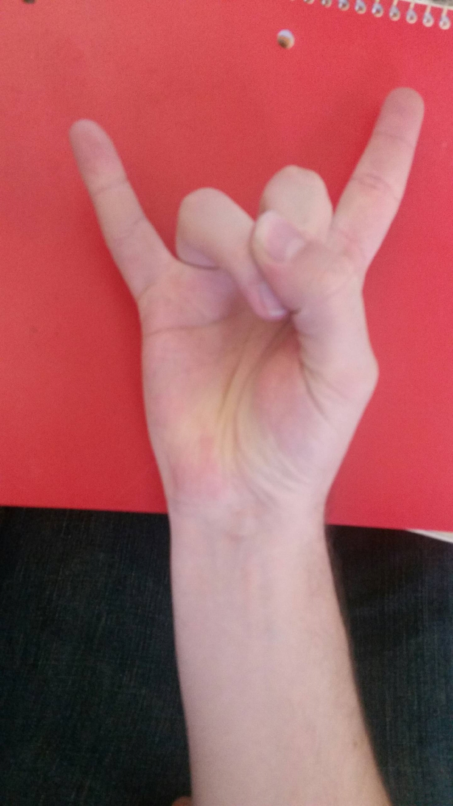 | 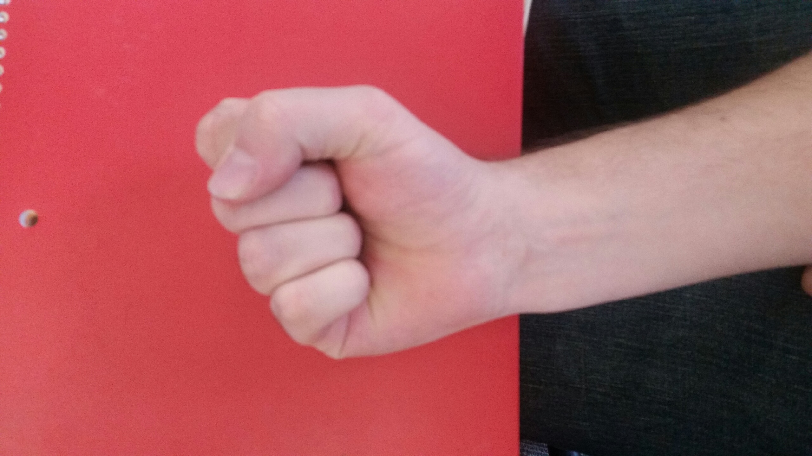 | 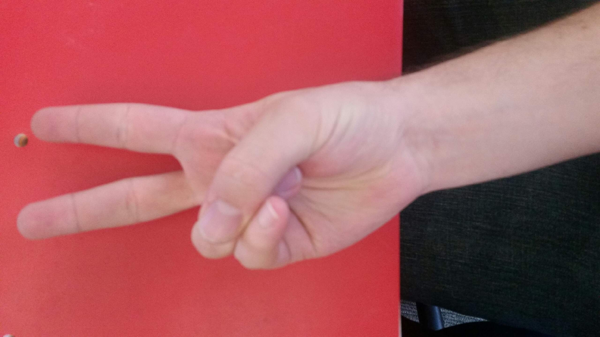 |
Attempt 2: Do Hand Shape detection using ratios of the bounding box
For this we just scrapped the template and just used the ratio of length and width of the bounding box to determine what class the shape was.
Ranges were determined numerically and were incorporated in the algorithm.
Experimentally we found:
1.18 < = "Horns" --> Heavy metal
1.18 > z > .80 = "Fist" --> Pause
.67 > = "Peace" --> Beatles
Experiments
Our experiments invovled testing the algorithms by trial and error. We had a lot images displayed and a lot of metrics outputed to the terminal to see what our algorithms were doing. Our evaluation metrics were largely just real time accuracy although we utilized the confusion matrix as way of organizing the data. Our running time was very slow although resizing frames often helped. Our testing for the music player involved making a shape and waiting 5-7 seconds to see if the system could detect the change.Results
In general our tracking algorithm worked fairly well finding the Charlie Card on most occasions and being able to detect simple orinetation changes by 90 degrees as well as scaling. In part 2 our hand shape detection worked well and we were able to ge the code to output music and images based on the hand shape the camera detected. A confusion from part 2 is shown below along with sample screen shots taken during trial runs.
Confusion Matrix
Confusion Matrix | |||
| Horns | Peace | Fist | |
| Horns | 5 | 2 | 1 |
| Peace | 1 | 7 | 0 |
| Fist | 1 | 0 | 5 |
Results from Tracking | ||
| 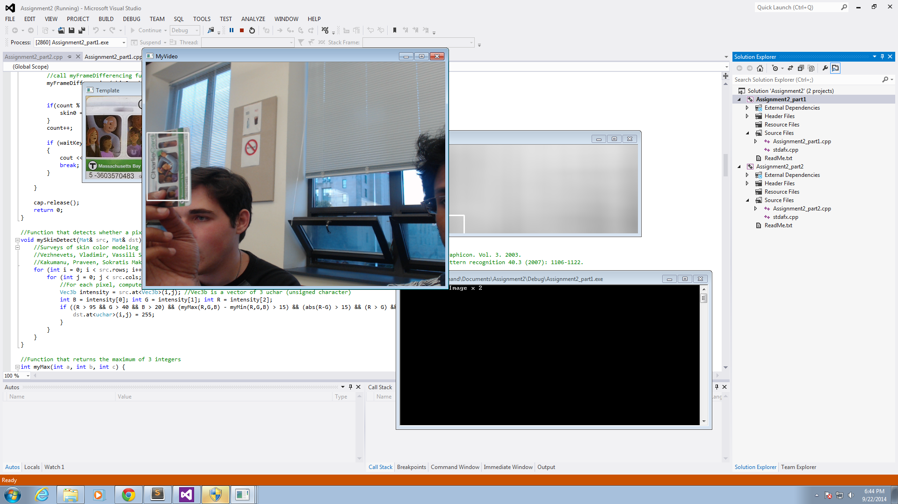 | 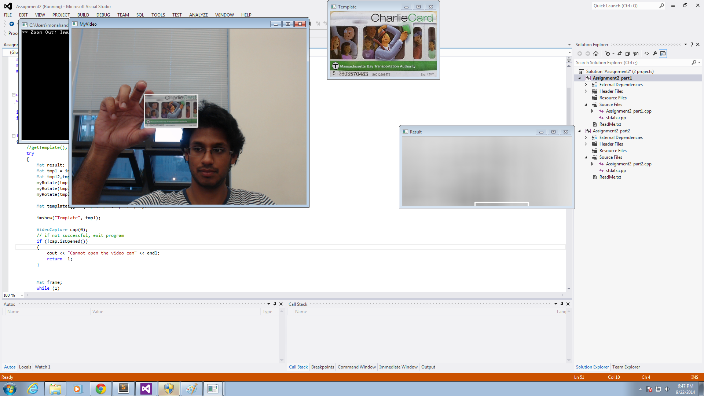 | 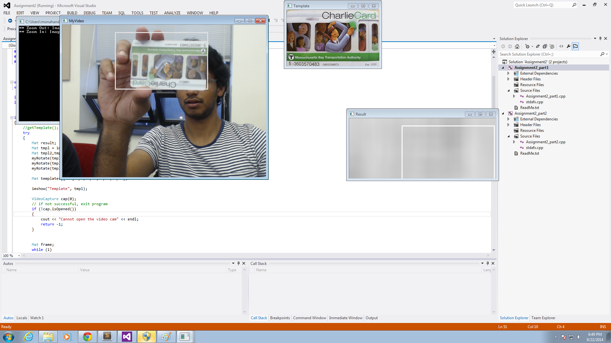 |
Results from HandShape Recognition | ||
| 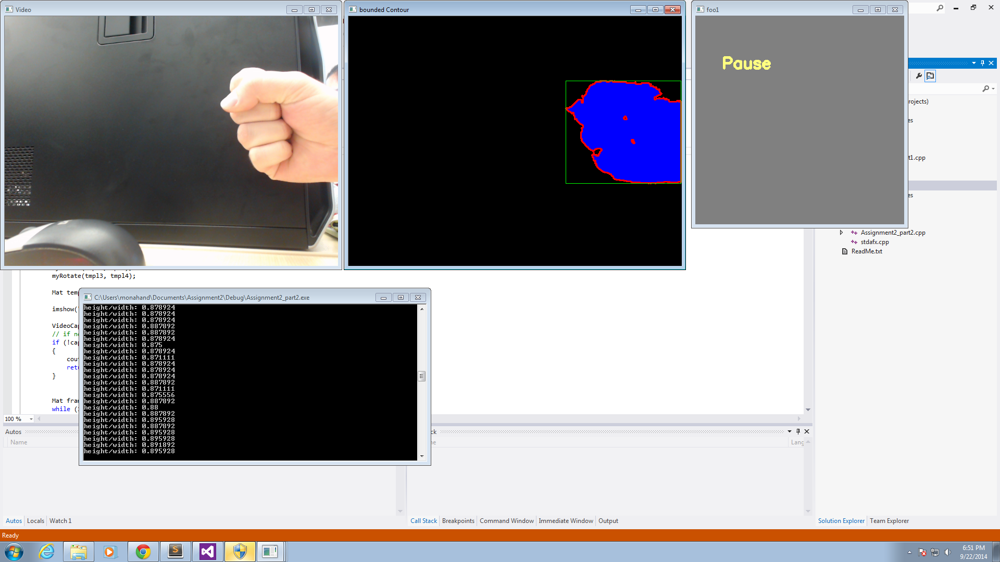 | 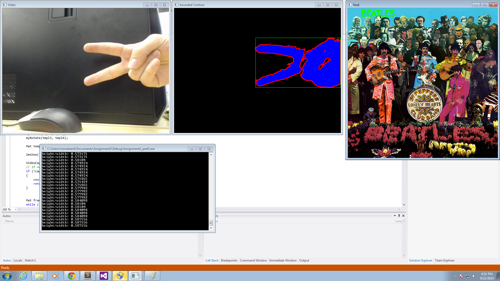 | 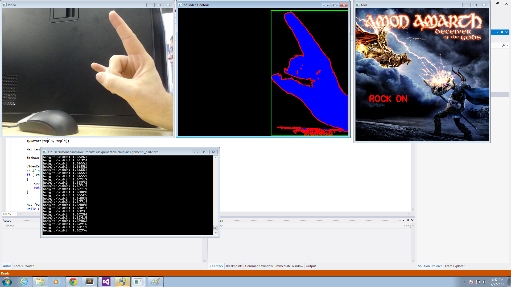 |
Discussion
For part 1 our method worked well for all 90 degree angles. It was pretty weak at all other angles and scaling could be removed. Otherwise the results seemed to meet our expectations in the sense that it tracked the Charlie Card. Future work for this could include more angles for orientation detection, better scaling, and be able to deal with more difficult templates. For part 2, future work would be to get our Hausdorff distance from a template to work. Changes may be needed to the sizing of the frame. For the part maybe a better method for measuring the ratio could be used to get a more precise algorithm. Another idea would be to incorparate convex hull points into our algorithm.
Conclusions
Overall I'm happy with the results of part 1. It was unfortunate that our Hausdorff distance template matching idea did not work, but in the end the ratio of the bounding box worked so that was fine. One takeaway for me is that I had not realized how quickly extra lines of code could slow down performance. Also that opencv's code based is super optimized for speed and efficency. We also realized that Hausdorff distance on its own is not useful for hand shape detection.
Credits and Bibliography
Joint work was done with Sweekriti Satpathy and Daniel Monahan.
http://docs.opencv.org/doc/tutorials/imgproc/histograms/template_matching/template_matching.html
http://www.cplusplus.com/forum/beginner/61038/
http://docs.opencv.org/modules/imgproc/doc/object_detection.html
http://en.wikipedia.org/wiki/Cross-correlation#Normalized_cross-correlation
http://en.wikipedia.org/wiki/Hausdorff_distance